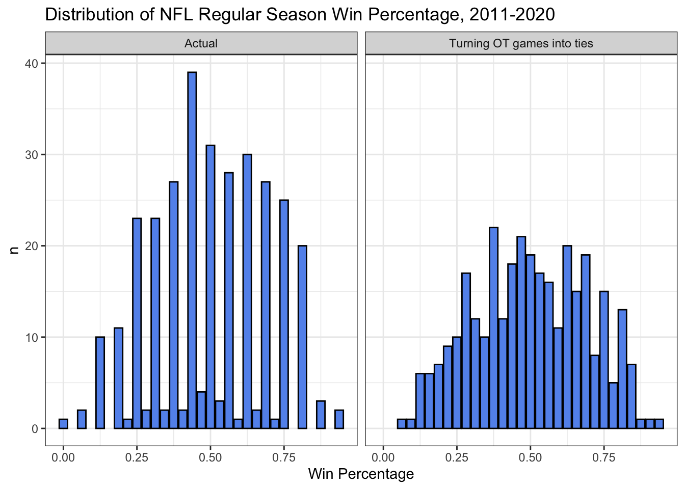
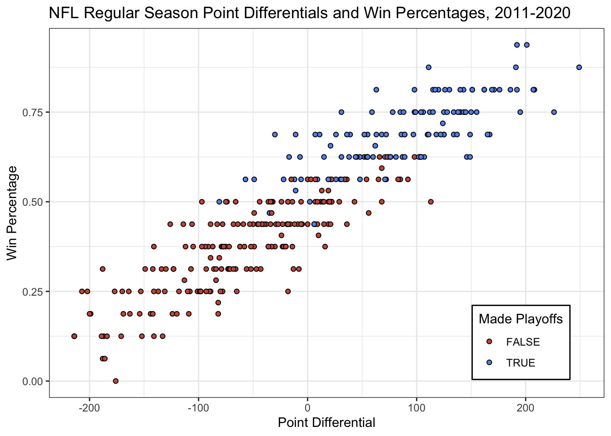

Contests without winners don’t play well in America, a country so rabid for unadulterated competition that we celebrate silly quotes like “ties are like kissing your sister.” Of the “big four” sports in the U.S., baseball, basketball, and hockey are played until an outright winner is determined, while football requires 70 grueling minutes before teams begrudgingly accept a draw.
But the NFL in particular would benefit from more ties if the league decided to eliminate overtime and end games after regulation. Not only would this rule change create some much needed granularity in the standings, where 16 (now 17) games is often too small a sample to separate teams, leading to complicated tie-breaking criteria. But it would also better align win percentage with point differential, a more accurate measure of performance.
Plus — why make exhausted players maul each other for an extra ten minutes in a sport notorious for the frequency and severity of its injuries?
Unjamming the Standings
In 2017, four AFC teams finished with identical 9-7 records, but only two of them reached the playoffs. The Titans and Bills placed ahead of the Ravens and Chargers on account of the cascading logic outlined in the right-most column in the table below, which refers to a sequence of tie-breaking criteria that effectively punishes teams for winning the wrong games:

As unsatisfying as it is to rely on such technicalities to define the playoff pool, this methodology is called upon nearly every year to resolve the inevitable traffic jam in the standings brought upon by a short, 16-game schedule that pigeonholes good teams into only a handful of possible records. One might find this consequence a bit ironic: the league’s pursuit of an outright winner doesn’t actually eliminate ties, it just shifts them from the scope of a single game and into the standings.
On the other hand, if we had ended all of those 2017 games after regulation, regardless of whether one team had outscored another, then all four teams’ overtime outcomes would be rewound into ties. The resulting standings, while still not perfectly separated, would be a lot more definitive:

Apply the same logic to every game in the ten seasons spanning 2011 to 2020, and you introduce some sorely needed variety into final records that would otherwise stack up at values like 8-8 or 9-7. In the redistribution of win percentage shown below, you can see how ties knock teams off the pile-ups at typical records and into the underused interstitial spaces. It’s like we’re playing piano and are finally permitted to use the black keys:

While it was always possible to achieve these records, the rarity of ties – there were only nine total in the studied period – made it unlikely, leading to such accumulations at more common values. Indeed, 62% of teams finished with a final record identical to another team in their conference, while settling for ties after regulation would cut that rate down to 30%.
Rewarding the Best Teams
Perhaps the cruelest aspect of the above example from 2017 was that the two teams that missed the playoffs had significantly better point differentials than the two teams that snuck in. The Ravens outscored opponents by 92 points, fourth best in the entire conference, but were superseded by a Buffalo team with a -57 point differential.
Generally speaking, the best teams accumulate the largest point differentials on the way to the best records and are rewarded with playoff berths. There is a 91.5% correlation between point differential and win percentage from 2011-2020, and of the 61 teams with point differentials of at least +100, only the 2019 Cowboys missed the playoffs:

However, a team’s point differential and their record can diverge if they have extreme luck in close games. The aforementioned 2017 Ravens lost two games that December by a combined five points. Overtime affairs are by definition close games, since a team can win by at most six points, and therefore offer a much weaker signal-to-noise ratio than outcomes decided in regulation. The victor is often not so much the deserving team as it is the beneficiary of a single dropped pass, missed tackle, or extra rotation of a flipped coin.
It’s no surprise, then, that eliminating overtime and assigning “half” of a win to each team inches the correlation between point differential and win percentage up to 92.2%. This upgrade may seem marginal, but we don’t need tectonic shifts to improve a system that’s already mostly correct. As the case of the 2017 Ravens demonstrates, a minor adjustment can make the standings slightly more “fair,” assuming point differential is the purest indicator of team talent, and create a playoff pool that better represents the highest performing teams.
Avoiding More Injuries
The fact that I needed to note earlier that the league extended their season length to 17 games is perhaps proof that the NFL doesn’t really care about additional playing time’s effect on player health. But if they did, they might consider that the additional 2,970 plays that occurred in overtime from 2011-2020 led to an extra 52 injuries and that the incidence of injuries in overtime (1.8 per 100 plays) is slightly higher than that of regulation (1.6).
An extra half dozen injuries per season barely registers in a sport that tallies hundreds of them every year. Still though, any reduction in career-threatening (and sometimes life-changing) bodily harm to players is a worthy goal, especially given the other benefits of this rule change.
There are of course some implications that I’m not considering. Knowing that games would not extend into an extra period, teams might play more or less aggressively in the final minutes depending on whether their standing would benefit from a tie. There would probably be instances of teams without the lead still choosing to run out the clock, or teams drawing up desperation trick plays despite not trailing. But it’s hard to imagine that getting rid of overtime would change the style of play so much as to outweigh the above three points in favor of more ties.
The idea for this analysis came from a conversation I had years ago with the late Jim Pagels, who was an avid sports fan and also a very thoughtful one. All code used for the analysis is below.
suppressMessages(library(tidyverse))
suppressMessages(library(nflfastR))
suppressMessages(library(DBI))
suppressMessages(library(RSQLite))
suppressMessages(library(lubridate))
setwd("/Users/walkerharrison/Desktop/straightenerbot")
options(dplyr.summarise.inform = FALSE)
# updated dataset of teams that includes conference, division
load("/Users/walkerharrison/Downloads/teams_colors_logos.rda")
connection <- DBI::dbConnect(RSQLite::SQLite(), "./pbp_db")
pbp_db <- tbl(connection, "nflfastR_pbp")
update_db()
# smaller datast that only includes the seasons, columns that we want
pbp_db2 <- pbp_db %>%
select(game_id, game_date, home_team, away_team, season, season_type, week, stadium, start_time, home_score, away_score, result,
play_id, order_sequence, qtr, desc, play_type, total_home_score, total_away_score, home_wp, home_wp_post) %>%
filter(season >= 2011, season < 2021) %>%
arrange(game_id, order_sequence) %>%
copy_to(connection, ., name = "pbp_db2", temporary = TRUE)
# every game from perspective of home team
g_home <- pbp_db2 %>%
filter(season_type == "REG") %>%
collect() %>%
# make plays end in regulation
mutate(order_sequence2 = ifelse(qtr > 4, -Inf, order_sequence)) %>%
group_by(season, week, game_date, game_id, team = home_team, opponent = away_team) %>%
summarize(team_score = total_home_score[which.max(order_sequence)],
opp_score = total_away_score[which.max(order_sequence)],
team_score2 = total_home_score[which.max(order_sequence2)],
opp_score2 = total_away_score[which.max(order_sequence2)]
)
# every game from perspective of away team
g_away <- pbp_db2 %>%
filter(season_type == "REG") %>%
collect() %>%
# make plays end in regulation
mutate(order_sequence2 = ifelse(qtr > 4, -Inf, order_sequence)) %>%
group_by(season, week, game_date, game_id, team = away_team, opponent = home_team) %>%
summarize(team_score = total_away_score[which.max(order_sequence)],
opp_score = total_home_score[which.max(order_sequence)],
team_score2 = total_away_score[which.max(order_sequence2)],
opp_score2 = total_home_score[which.max(order_sequence2)]
)
# figure out which teams made playoffs every year
playoffs <- pbp_db2 %>%
filter(season_type == "POST") %>%
select(season, home_team, away_team) %>%
collect() %>%
gather(type, team, -season) %>%
select(season, team) %>%
distinct() %>%
mutate(playoffs = TRUE)
# calculate conventional records as well as those without OT
records <- rbind(g_home, g_away) %>%
group_by(season, team) %>%
summarize(W = sum(team_score > opp_score),
L = sum(opp_score > team_score),
T = sum(team_score == opp_score),
PD = sum(team_score) - sum(opp_score),
W2 = sum(team_score2 > opp_score2),
L2 = sum(opp_score2 > team_score2),
T2 = sum(team_score2 == opp_score2),
PD2 = sum(team_score2) - sum(opp_score2)
) %>%
mutate(WP = (W + 0.5*T)/(W+L+T),
WP2 = (W2 + 0.5*T2)/(W2+L2+T2)) %>%
inner_join(teams_colors_logos %>% select(team = team_abbr, team_conf, team_division), by = "team") %>%
left_join(playoffs, by = c('season', 'team')) %>%
mutate(playoffs = coalesce(playoffs, FALSE)) %>%
ungroup()
# distribution of WP both ways
g1 <- records %>%
ungroup() %>%
select(`Current` = WP, `No OT` = WP2) %>%
gather(type, val) %>%
count(type, val) %>%
mutate(type = factor(type, levels = c("Current", "No OT"))) %>%
ggplot(aes(val, n)) +
geom_bar(stat = "identity", fill = "cornflowerblue", col = "black") +
facet_wrap(~type) +
theme_bw() +
labs(x = "Win Percentage",
title = "Distribution of NFL Regular Season Win Percentage, 2011-2020")
# rate of identical records
records %>%
group_by(season, team_conf, W, L, T) %>%
mutate(matches = n()) %>%
ungroup() %>%
summarize(mean(matches > 1))
# new rate of identical records
records %>%
group_by(season, team_conf, W2, L2, T2) %>%
mutate(matches = n()) %>%
ungroup() %>%
summarize(mean(matches > 1))
# relationship between point differential and win percentage
g2 <- records %>%
ggplot(aes(PD, WP, fill = playoffs)) +
geom_point(col = "black",
#fill = "cornflowerblue",
shape = 21) +
scale_fill_manual(values = c("coral3", "cornflowerblue")) +
theme_bw() +
labs(x = "Point Differential", y = "Win Percentage", fill = "Made Playoffs",
title = "NFL Regular Season Point Differentials and Win Percentages, 2011-2020")
# old and new correlations between win percentage and point diff
records %>%
summarize(cor(WP, PD), cor(WP2, PD2))
# injury rates, overtime and otherwise
pbp_db2 %>%
filter(season_type == "REG", !is.na(play_type)) %>%
collect() %>%
group_by(qtr > 4) %>%
summarize(plays = n(),
injuries = sum(str_detect(desc, "injure"))) %>%
mutate(injuries/plays)